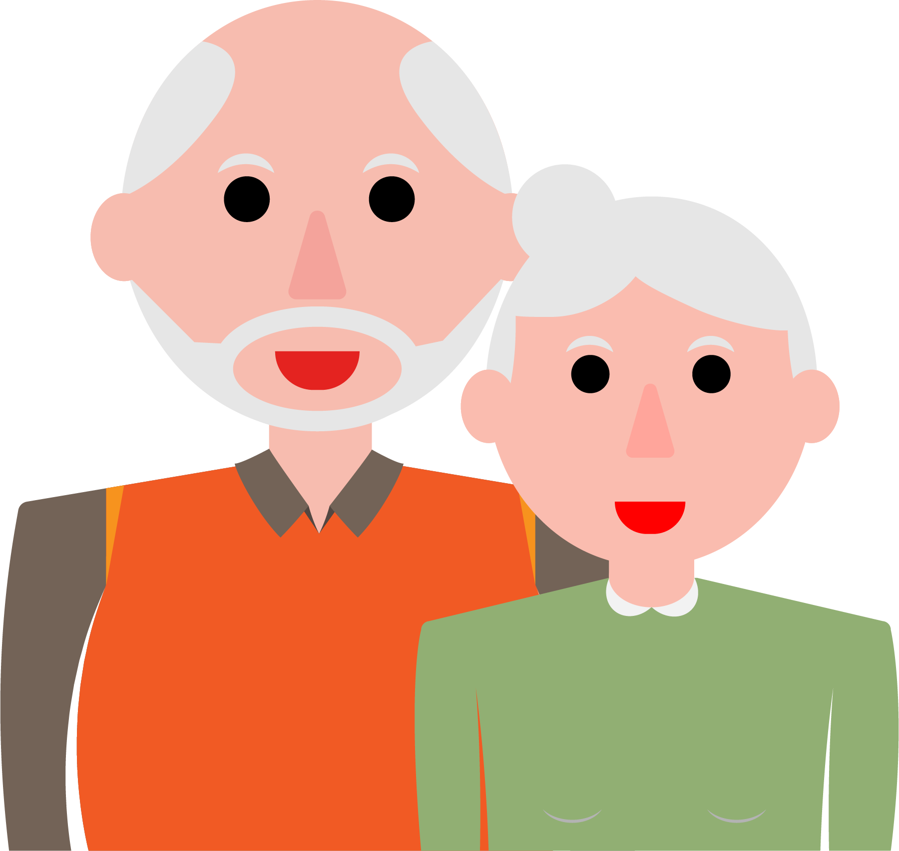

Mevrouw Kok is een vrouw van 82 jaar, heeft dementie en woont sinds één jaar in het verpleeghuis en kan niet meer zelf eten. Haar man helpt haar iedere dag bij de maaltijden, al zeker vijf jaar.
De laatste jaren gaat het slikken steeds moeilijker en mevrouw Kok verslikt zich steeds vaker. Ondanks de adviezen (dik vloeibaar eten en minder snel voeden) die de logopedist aan haar man gegeven heeft, blijft mevrouw zich regelmatig verslikken.
De zorgmedewerkers vinden het niet meer verantwoord dat de man haar eten geeft en willen mevrouw sondevoeding geven. Meneer Kok vindt dit lastig, omdat dit hun moment samen is en hij het eetmoment niet van zijn vrouw wilt afnemen. Hij is bang dat hij hiermee nog meer gevoel van waardigheid afneemt van zijn vrouw. Mevrouw Kok kan niet meer goed aangeven wat zij wil, maar uit haar non-verbale communicatie blijkt wel dat ze het erg fijn vindt als haar man er is.
 Help mevrouw